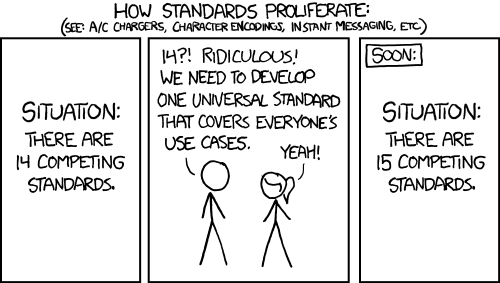

![]()
| Day | Date | Time | Title |
|---|---|---|---|
| 1 | 2026-05-07 | 09:00 - 09:30 | Welcome and Introduction to Research Data Management |
| 1 | 2026-05-07 | 09:30 - 10:30 | Project & Data Organization |
| 1 | 2026-05-07 | 10:30 - 11:30 | Data Management Plans (DMPs) |
| 1 | 2026-05-07 | 11:30 - 12:30 | Lunch Break |
| 1 | 2026-05-07 | 12:30 - 13:30 | Command Line |
| 1 | 2026-05-07 | 13:30 - 14:30 | Best practices for rectangular data |
| 1 | 2026-05-07 | 14:30 - 16:00 | Brain Imaging Data Structure (BIDS) |
Brain Imaging Data Structure (BIDS)
Research Data Management for Psychology and Neuroscience
Course at Julius-Maximilians-Universität Würzburg, RTG 2660: Approach-Avoidance
Slides | Source

14:30
Schedule
This session: Brain Imaging Data Structure (BIDS)

Objectives
💡 You understand what BIDS (Brain Imaging Data Structure) is and why it’s important for neuroimaging.
💡 You can explain the core principles of BIDS and how it solves common data organization problems.
💡 You can organize neuroimaging data according to BIDS directory structure standards.
💡 You understand the role of JSON metadata files and TSV data files in BIDS datasets.
💡 You know how to validate BIDS datasets using the BIDS validator.
💡 You understand the benefits of using BIDS for collaboration, reproducibility, and data sharing.
1 Introduction to BIDS
What is BIDS?
The Brain Imaging Data Structure (BIDS) is a standard to organize and describe neuroimaging and behavioral data.
Key characteristics:
- Standardized file organization and naming conventions
- Community-driven specification
- Modality-agnostic (fMRI, EEG, MEG, PET, behavior)
- Human and machine readable
- Growing ecosystem of compatible tools
The Problem BIDS Solves
Before BIDS 😞
- Every lab organized data differently
- Time wasted understanding data structure
- Difficult collaboration and data sharing
- Scripts broke when data moved
- No common metadata standards
With BIDS 😊
- Standard organization across labs
- Immediate understanding of data structure
- Easy collaboration and sharing
- Tool interoperability
- Structured metadata
Standards …
… but probably different with BIDS?

2 BIDS Principles
Core BIDS Principles
- Simplicity: Based on common file formats (NIfTI, JSON, TSV)
- Consistency: Standardized naming and folder structure
- Flexibility: Supports multiple neuroimaging modalities
- Extensibility: Community-driven extensions (BEPs)
- Validation: Tools to check compliance
- Documentation: Self-documenting through metadata files
File Naming Convention
BIDS uses entities to create standardized file names:
sub-<label>[_ses-<label>][_task-<label>][_acq-<label>][_run-<label>]_<suffix>.<ext>Examples:
sub-01_task-rest_bold.nii.gz(fMRI resting-state)sub-02_ses-001_task-faces_run-1_bold.nii.gz(task fMRI)sub-01_T1w.nii.gz(structural MRI)sub-03_task-nback_eeg.bdf(EEG data)
3 BIDS Directory Structure
Basic BIDS Dataset Structure
my-dataset/
├── dataset_description.json
├── README
├── CHANGES
├── participants.tsv
├── participants.json
└── sub-01/
├── anat/
│ ├── sub-01_T1w.nii.gz
│ └── sub-01_T1w.json
└── func/
├── sub-01_task-rest_bold.nii.gz
├── sub-01_task-rest_bold.json
└── sub-01_task-rest_events.tsvRequired Files
Every BIDS dataset must include:
dataset_description.json- Dataset metadata (name, version, authors)README- Human-readable description- At least one subject folder (
sub-<label>/) - Proper file naming following BIDS conventions
Optional but Recommended
participants.tsv- Subject demographics and characteristicsparticipants.json- Metadata for participants fileCHANGES- Version historyLICENSE- Data usage licensecode/- Analysis scriptsderivatives/- Processed data
4 Data Types and Modalities
Supported Neuroimaging Modalities
Core modalities:
- Anatomical MRI (
anat/) - Functional MRI (
func/) - Diffusion MRI (
dwi/) - Fieldmaps (
fmap/)
Electrophysiology:
- EEG (
eeg/) - MEG (
meg/) - iEEG (
ieeg/)
Other modalities: PET, microscopy, behavioral data, genetics, physiological recordings, and more!
Example: fMRI Task Data
sub-01/
└── func/
├── sub-01_task-faces_bold.nii.gz # Brain imaging data
├── sub-01_task-faces_bold.json # Imaging parameters
├── sub-01_task-faces_events.tsv # Task events/stimuli
└── sub-01_task-faces_events.json # Events metadataKey files:
.nii.gz- Brain imaging data.json- Technical metadata (TR, TE, slice timing, etc.)_events.tsv- Task timing and conditions
5 Metadata and Documentation
JSON Metadata Files
BIDS uses JSON files to store technical parameters and metadata:
TSV Files for Tabular Data
Tab-separated values for events, participants, and other tabular data:
onset duration trial_type response_time
0.0 2.5 face 1.2
3.0 2.5 object 0.9
6.0 2.5 face 1.1- Machine-readable for analysis
- Human-readable for inspection
- Version-control friendly (plain text)
6 BIDS Ecosystem
BIDS-Compatible Tools
Data organization:
- Heudiconv
- BIDScoin
- dcm2bids
Preprocessing:
- fMRIPrep
- MRIQC
- QSIPrep
Analysis:
- Nilearn
- SPM12
- FSL
- AFNI
Data sharing:
- OpenNeuro
- BIDS Validator
BIDS Validator
Automatic validation of BIDS compliance:
- Web version: bids-standard.github.io/bids-validator/
- Command-line tool:
bids-validator /path/to/dataset - Checks: File naming, required files, metadata consistency
Benefits:
- Catch errors early
- Ensure compatibility with BIDS tools
- Prepare for data sharing
7 Getting Started with BIDS
Steps to BIDSify Your Data
- Plan ahead: Consider BIDS during data collection
- Learn the specification: Read the BIDS specification
- Use conversion tools: dcm2bids, Heudiconv, etc.
- Validate: Use BIDS validator regularly
- Document: Create comprehensive README and metadata
- Share: Consider uploading to OpenNeuro
BIDS Starter Kit
The BIDS Starter Kit provides:
- Tutorials for getting started
- Templates for common files
- Best practices and examples
- Community support and resources
Benefits of Using BIDS
- Collaboration: Easier to share and understand data
- Reproducibility: Standardized organization aids replication
- Tool compatibility: Access to BIDS-aware analysis pipelines
- Data sharing: Ready for repositories like OpenNeuro
- Future-proofing: Organized data survives lab transitions
- Quality control: Built-in validation catches errors
8 Examples
Example Dataset: Task fMRI Study
bids-dataset/
├── dataset_description.json
├── README
├── participants.tsv
├── participants.json
├── task-faces_bold.json # Task-level metadata
├── sub-01/
│ ├── anat/
│ │ ├── sub-01_T1w.nii.gz
│ │ └── sub-01_T1w.json
│ └── func/
│ ├── sub-01_task-faces_run-1_bold.nii.gz
│ ├── sub-01_task-faces_run-1_bold.json
│ ├── sub-01_task-faces_run-1_events.tsv
│ ├── sub-01_task-faces_run-2_bold.nii.gz
│ ├── sub-01_task-faces_run-2_bold.json
│ └── sub-01_task-faces_run-2_events.tsv
└── sub-02/
└── ... (similar structure)Common Challenges and Solutions
Challenge: Complex naming
- Solution: Use BIDS tools for conversion
- Start with simple cases first
Challenge: Legacy data
- Solution: Gradual conversion
- Document any deviations
Challenge: Multiple sessions
- Solution: Use session folders (
ses-<label>) - Consistent session naming
Challenge: Non-standard acquisitions
- Solution: Use acquisition entity (
acq-<label>) - Document in README
9 Extensions and Future
BIDS Extension Proposals (BEPs)
BIDS evolves through community-driven extensions:
Recent additions:
- EEG/MEG data organization
- PET imaging protocols
- Microscopy data standards
- Motion data capture
- Genetics information
The Future of BIDS
- Broader adoption across neuroscience
- New modalities being standardized
- Enhanced metadata schemas
- Integration with analysis platforms
- Machine learning dataset preparation
10 Summary
Key Takeaways
- BIDS standardizes neuroimaging data organization
- Benefits everyone: researchers, collaborators, future you
- Ecosystem growth: tools, databases, and community support
- Start now: Plan BIDS organization during data collection
- Resources available: Specification, starter kit, validator, community
- Future-proof your research data management
Next Steps
For your next neuroimaging project:
- Read the BIDS specification
- Explore the BIDS Starter Kit
- Try the BIDS validator
- Join the BIDS community
- Consider your data collection protocol
Resources
- BIDS Specification: bids-specification.readthedocs.io
- BIDS Starter Kit: bids-standard.github.io/bids-starter-kit/
- BIDS Validator: bids-standard.github.io/bids-validator/
- OpenNeuro: openneuro.org
- Community Forum: neurostars.org/tag/bids
References
- Gorgolewski, K.J., Auer, T., Calhoun, V.D., et al. (2016). The brain imaging data structure, a format for organizing and describing outputs of neuroimaging experiments. Scientific Data, 3, 160044. doi:10.1038/sdata.2016.44
11 Exercises
Exercise 1
Exercise 1: Explore BIDS datasets on OpenNeuro
Objective: Familiarize yourself with BIDS-formatted datasets and understand how standardized organization facilitates data sharing and reuse.
Instructions:
Navigate to OpenNeuro:
- Visit https://openneuro.org/
- Browse the available datasets on the homepage
Select and explore a dataset:
- Choose one dataset that interests you (e.g., neuroimaging study related to your research area)
- Click on the dataset to view its details
Examine the BIDS structure:
- Click “Browse” or “Files” to view the dataset’s file structure
- Explore the following directories (if present):
- Root level files (
dataset_description.json,README,participants.tsv) - Subject folders (
sub-01,sub-02, etc.) - Session folders (if applicable:
ses-01,ses-baseline, etc.) - Modality folders (
anat,func,dwi,fmap, etc.)
- Root level files (
Explore the dataset:
- What type of neuroimaging data does it contain?
- How many subjects are included?
- What file naming patterns do you observe?
- Are there any derivative datasets associated with it?
Compare with raw data organization:
- Think about how this standardized structure compares to typical “raw” data organization
- What advantages does this standardization provide for:
- Data sharing?
- Automated processing?
- Reproducibility?
Discussion points:
- How does the BIDS structure make it easier to understand the dataset without detailed documentation?
- What challenges might researchers face when converting their data to BIDS format?
Exercise 2
Exercise 2: Hands-on BIDS practice
Objective: Learn how to create a BIDS dataset using heudiconv and use BIDS validation.
Access the hands-on tutorial: https://lennartwittkuhn.com/rdm-bids/
Questions & Discussion
Discussion time:
- Have you encountered challenges organizing neuroimaging data?
- Which BIDS modalities are relevant to your research?
- What barriers do you see to adopting BIDS?
- How might BIDS improve your workflow?
References
Gorgolewski, K. J., Auer, T., Calhoun, V. D., Craddock, R. C., Das, S., Duff, E. P., Flandin, G., Ghosh, S. S., Glatard, T., Halchenko, Y. O., Handwerker, D. A., Hanke, M., Keator, D., Li, X., Michael, Z., Maumet, C., Nichols, B. N., Nichols, T. E., Pellman, J., … Poldrack, R. A. (2016). The brain imaging data structure, a format for organizing and describing outputs of neuroimaging experiments. Scientific Data, 3(1). https://doi.org/10.1038/sdata.2016.44.
RDM Course